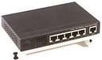

Hubs, switches and routers are devices that let you connect one or more computers to other computers, networked devices, or other networks.

A hub allows one device to connect to more than one device, such as in the case of a USB hub, which will allow you to use one USB cable to connect to more than one USB device. A hub broadcasts "frames" to every one of it's ports.
A switch is like a hub, but it "learns" the location of devices and transfers information more efficiently. When it transfers frames, it transfers them to the learned location of the device it is trying to reach.
A routers job is to "route" packets to other networks. One of the key features of a packet is that it not only contains data, but the destination address of where it's going.